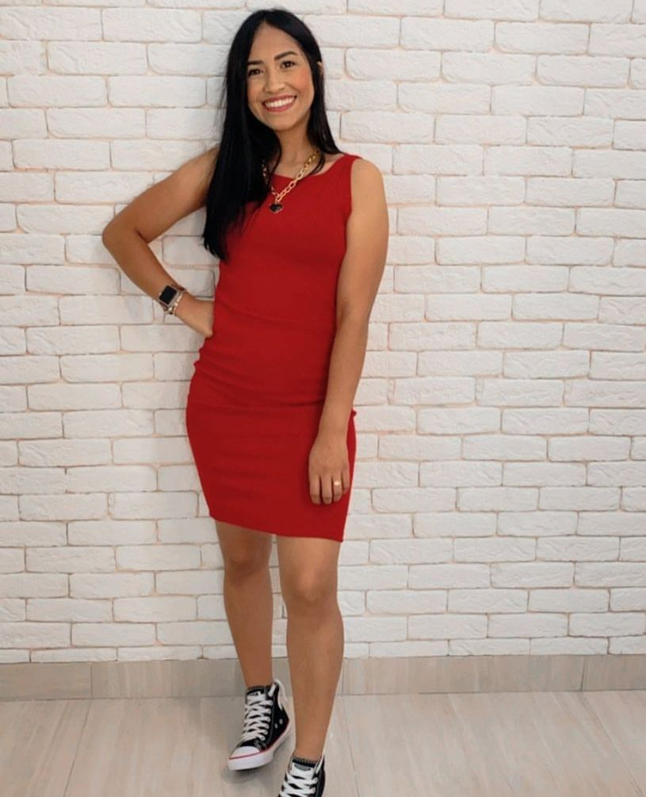
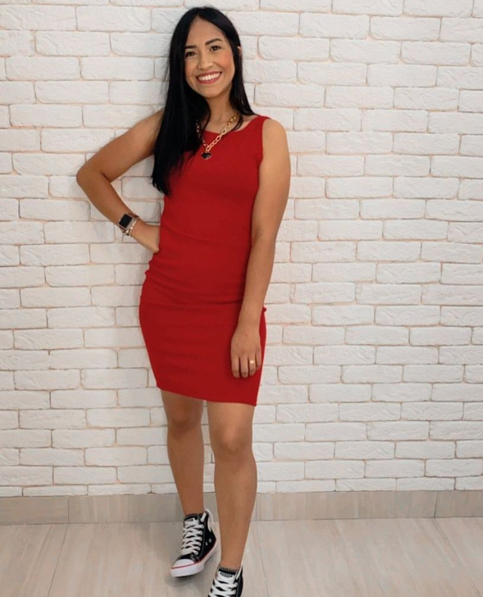

A jaqueta jeans é uma peça Indispensavel
no nosso Guarda-Roupa
além de deixar o
look despojado moderno,bem elegante é
uma peça que pode ser usada tanto
com
look's de inverno e de verão.
Blusas de tricot são peças belas e versáteis
elas combinam com diferentes ocasiões e
podem compor
o look de modo fácil e prático
Ainda assim, é comum ter dúvidas de como
utilizar a peça em
algumas ocasiões.
O look com parka não se limita a estilo
nenhum e pode fazer parte do closet de todas
as
fashionistas sarjas, e variações de cores
esse modelo a toca pode ser removivel e
também ajusta
na cintura.
 
